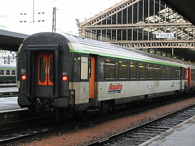
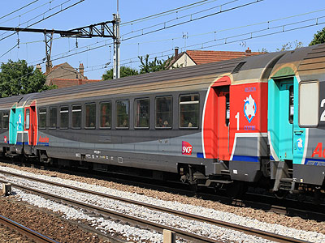
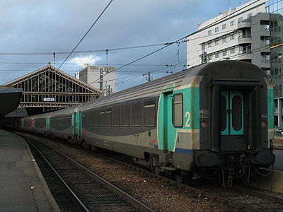
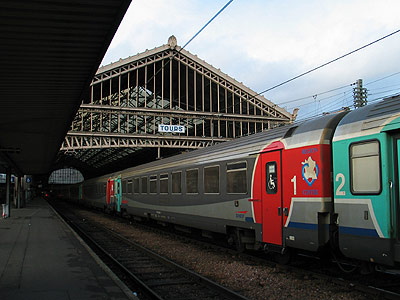
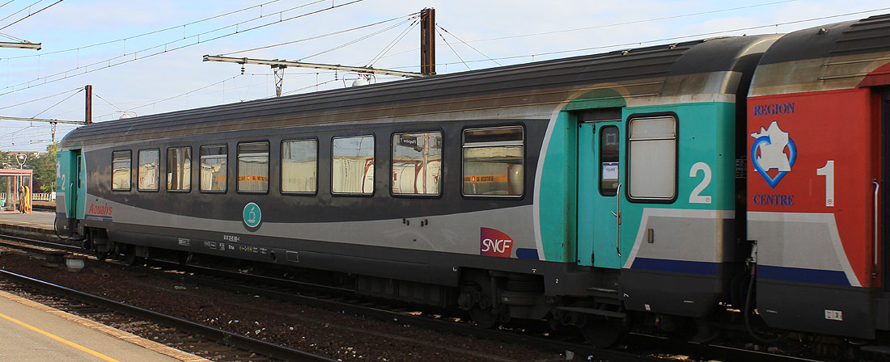

Ferrovia - 10 Novembre 2015
Corail Aqualys
Paris - Orléans - Tours
Aqualys fut le nom commercial de la relation interrégionale entre Paris et le val de Loire (Orléans, Blois, Tours) entre 2000 et 2011. Ces trains étaient directs de Paris aux Aubrais et assuraient une desserte plus fine du val de Loire, sans pour autant être qualifiés de TER.
Le parc Aqualys était constitué de 55 voitures aptes à 200km/h dédiées à ces express. Les voitures en livrée Corail reçurent des autocollants Aqualys et le logo de la région Centre avant de recevoir une livrée spécifique.
L'offre Aqualys fut dissoute fin 2011 pour être réorganisée et intégrée à Intercités. La desserte fine du val de Loire est dorénavant assurée par TER.
Composition du parc
Le parc comportait principalement des VTU 75 et 78 (A9tu, B10½tu, B7rtux), des VTU 84 A5B4tux ainsi que des VU B11u.
Les A9tu ont reçu des sièges types TGV rénovés.
Les voitures de 2e classe ont un intérieur plus classique semblable aux Corail "Nouvelle Déco".
Les B7rtux sont des Bar Corail modifiés
avec remplacement du comptoir par des distributeurs automatiques.
Les A5B4tux sont d'anciennes A5B5tu où une travée de sièges est remplacée par une petite salle équipée
de strapontins et de crochets à vélos.
L'aptitude à 200 km/h de ce parc fut peu exploitée puisque la grande majorité des trains étaient tirés par des BB 9200 ou des BB 7200 limitées à 160 km/h. La situation de la gare d'Orléans en impasse et les demi-tours fréquents à Tours ou Paris-Austerlitz plaidaient en faveur de rames réversibles comme cela avait été déjà le cas dans les années 1980. La région Centre n'a cependant pas consenti à cet investissement lorsque les VU B6Du ont été transformées en B5uxh.
Pour plus d'info :
La fiche Aqualys sur Wikipedia.
Les Corail Aqualys sur Trains-Europe.
La fin des Aqualys sur transportrail.

Cette VTU B11tu en livrée d'origine est sommairement affublée d'un autocollant Aqualys (Tours, 29/12/2001)

VTU A9tu Aqualys (St Michel sur Orge, 02/06/2011)

VTU B10½tu Aqualys (Tours, 27/12/2003)

VTU A5B4tux Aqualys (Tours, 27/12/2003)

VTU B7rtux n°27-97 002-4 ex-Bar Corail Aqualys (Les Aubrais, 20/09/2011)